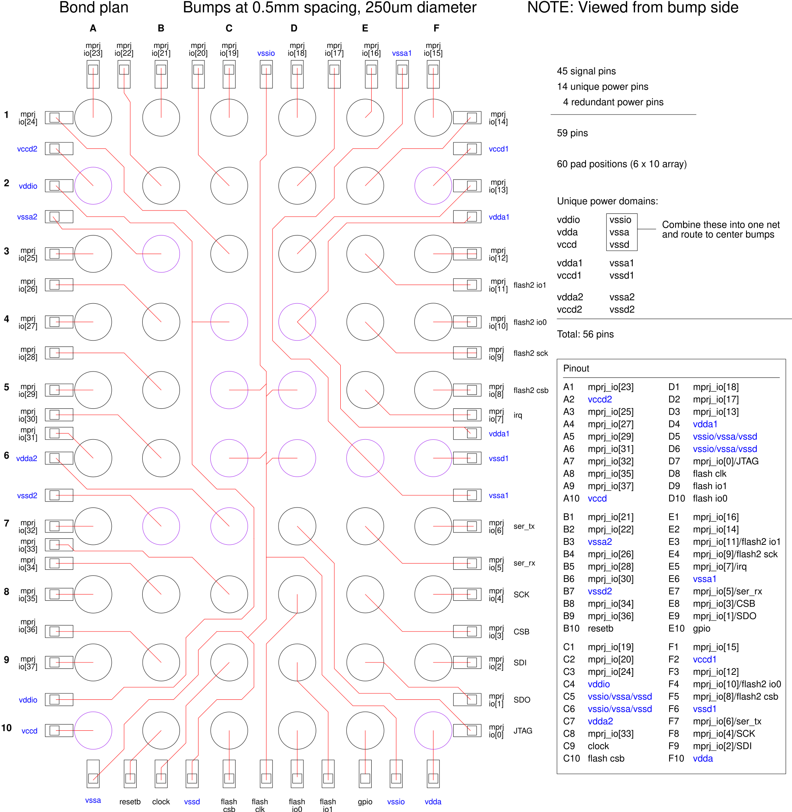

Packages: Wire Bonds, Flip-Chip, QFN & WLCSP
A package protects the die, spreads its tiny pads out to a pitch a circuit board can use, and carries heat away. Each way of making that connection adds its own resistance, capacitance and inductance.
What you will learn
- Explain what a package does and why die pads cannot be soldered straight to a board.
- Compare wire-bonded packages such as QFN with flip-chip and wafer-level packages such as WLCSP.
- Estimate the inductance a connection adds and the voltage it develops when current changes quickly.
1. What the package is for
A package does four jobs. It protects the brittle die from handling, moisture and light. It translates pitch: SKY130 GPIO pads sit about 80 µm apart, while board assembly works at 0.4–1.27 mm. It provides a heat path from the die to the board. And it gives the part a standard footprint that assembly lines and test sockets understand.
| Package family | How the die connects | Typical pitch | Size compared with the die |
|---|---|---|---|
| QFP (quad flat package) | Wire bonds to gull-wing leads on four sides | 0.4–0.8 mm | Several times larger |
| QFN (quad flat no-lead) | Wire bonds to flat lands on four sides, plus an exposed pad | 0.5–0.8 mm | 1.5–3× |
| BGA (ball grid array) | Wire bonds or flip-chip to a substrate with a ball array underneath | 0.8–1.27 mm | 1.5–4× |
| WLCSP (wafer-level chip-scale package) | Redistribution layer and solder balls built on the wafer | 0.3–0.5 mm | About the die size |
The pitch and size ranges are typical industry figures, not rules; each package drawing gives its own.
2. Wire bonding
In a wire-bonded package the die is glued face up to a metal pad — the paddle or die flag — with a die attach material. A bonding machine then welds a thin gold or copper bond wire, commonly 25 µm (1 mil) in diameter, from each die pad to a package lead: a ball bond on the die and a stitch bond on the lead. Finally the assembly is encapsulated in epoxy mold compound. Prototype packaging services publish rules for this; Europractice’s prototype rules, for example, use 25 µm gold ball bonding and require pad openings larger than 55 × 55 µm at a pitch above 65 µm.
A QFN (quad flat no-lead) package has flat lands flush with the bottom on all four sides and a large exposed pad under the die that is soldered to the board for heat removal and, usually, ground. Caravel’s QFN version is a 64-pin, 9 × 9 mm package with 0.5 mm lead pitch; its drawing labels the exposed pad VSS.
3. Flip-chip and wafer-level packages
In flip-chip assembly the die is turned face down and joined through solder bumps on its pads; there are no wires. A WLCSP (wafer-level chip-scale package) goes further: the packaging layers are built on the whole wafer before it is cut, so the finished package is essentially the die itself with solder balls on its face.
Bumps need far more room than pads. A redistribution layer (RDL) — an extra metal layer above the passivation — routes each perimeter pad to a bump site in an area array (lesson 67). Under each bump an under-bump metallization (UBM) stack gives the solder a surface it can wet and bond to.

4. Every connection is an inductor
A conductor carrying current stores energy in a magnetic field, so it has inductance L. When the current changes at a rate di/dt, a voltage V = L·di/dt appears across it. A common rule of thumb for a 25 µm bond wire is about 1 nH per millimeter of length. Flip-chip bumps are roughly ten times lower: on the order of 50–100 pH per bump, against 500–1000 pH for a typical wire bond.
Worked example (assumed values). A 2 mm ground bond wire is about 2 nH. If the core’s ground current changes by 20 mA in 1 ns, the wire develops 2 nH × 20 mA / 1 ns = 40 mV. The die’s ground moves 40 mV relative to the board’s ground — about 2% of a 1.8 V supply, appearing on every circuit that uses that ground. This is ground bounce. Four such wires in parallel, if they did not couple, would give 10 mV; one 0.08 nH bump gives 1.6 mV. Real values need a package model or extraction (lesson 69).
Try it: voltage across a package connection, V = L·di/dt
Voltage: · fraction of a 1.8 V supply:
Parallel connections divide the inductance only if they do not couple magnetically; real neighbors share some flux, so the benefit is smaller.
5. Pin 1 and the direction of the drawing
Every package marks pin 1 with a dot, notch or chamfer, and every drawing says whether it is a top view or a bottom view. A bottom view is a mirror image of a top view, so the same ball appears on the opposite side of the drawing. Figure 4 is drawn from the bump side; the board footprint in lesson 7 is drawn looking down on the board, and its columns run in the opposite order. Check the view label and pin 1 before drawing any footprint.
6. Heat leaves through the package too
Every watt the die dissipates must reach the air or the board. In a QFN most heat flows down through the die attach and the exposed pad into board copper, which is one reason the pad is soldered down and connected to inner layers with vias. Temperature changes transistor behavior, so the thermal path is part of the electrical design (lesson 69).
Check your understanding — why does a WLCSP need a redistribution layer while a QFN does not?
In a QFN, wires run from the perimeter pads directly to perimeter leads. In a WLCSP the solder balls form an array across the whole die face at 0.5 mm pitch, far coarser than the pad pitch, so each pad must be routed across the die to its ball site. The RDL provides that routing.
Check your understanding — in the worked example, how many parallel ground wires would keep ground bounce below 9 mV, ignoring coupling?
Each wire alone gives 40 mV. With N wires the inductance is 2/N nH, giving 40/N mV. N = 5 gives 8 mV. Coupling between neighbors makes the real improvement smaller, so a designer would also slow the current change or add decoupling capacitance on the die.
Key takeaways
- A package protects the die, fans its pads out to a board pitch, carries heat and gives a standard footprint.
- Wire bonding: die face up, 25 µm gold or copper wires, ball bond on the die and stitch bond on the lead; QFN adds an exposed pad.
- Flip-chip and WLCSP put the die face down on bumps; an RDL routes perimeter pads to an area array of bumps over UBM.
- Caravel: QFN-64, 9 × 9 mm, 0.5 mm pitch; WLCSP with a 6 × 10 bump array at 0.5 mm.
- A bond wire is about 1 nH/mm; V = L·di/dt turns fast current changes into supply and ground noise.
Sources & scope
Written 9 November 2026. Package dimensions are from the Caravel drawings; inductance values are rules of thumb and the worked example uses assumed values. Package ranges in the table are typical, not limits.
- Caravel documentation images (Apache-2.0) — bond plan (Figure 4)
- UNIC-CASS 2024 slides: Efabless Caravel — QFN-64 drawing
- Europractice ASIC prototype packaging design rules — wire, pad and pitch rules
- Semiconductor Digest: wire bonding considerations — ball-stitch bonding; 25 pH per mil of 1-mil wire
- RF Essentials: die-to-substrate transitions — bump versus wire-bond inductance
- JLCPCB: chip-scale packages explained — package size and pitch comparison
All 84 lessons
- Part I · Foundations: the physical chip and its vocabulary
- 1. What Is a Chip? Board, Package & Die
- 2. The Silicon Wafer: From Crystal to Dies
- 3. How a Die Is Built: SKY130 Layers & Lithography
- 4. The MOSFET: SKY130’s Transistor
- 5. Anatomy of a Die: Core, Pad Ring & Seal Ring
- 6. Packages: Wire Bonds, Flip-Chip, QFN & WLCSP
- 7. The PCB and the Path to the Transistor
- 8. The Design Flow and Its Files: RTL to GDS
- 9. Signals Primer: DC, AC, RMS, Decibels & the FFT
- Part II · Transistors to logic gates
- 10. Logic Gates at the Transistor Level
- 11. Drive Strength & Transistor Sizing
- 12. More Gate Topologies
- Part III · Standard-cell layout
- 13. Site Rows & Standard Cell Placement
- 14. The Power Grid & Routing Grids
- 15. Metal Layers, Vias & the Stackup
- 16. Inside a Standard Cell's Layout
- 17. The Cell Template: Tracks, Sites & Edges
- 18. Anatomy of a Bigger Cell
- 19. Pin Access & Porosity
- 20. A Flip-Flop From the Inside
- Part IV · Loads, timing and interconnect
- 21. Loads
- 22. Liberty Files: What a Cell Library Records
- 23. Reading Liberty Timing Tables
- 24. Standard-Cell Characterization: How Liberty Is Made
- 25. Timing
- 26. Setup and Hold
- 27. Latch-Based Design & Time Borrowing
- 28. Routing Resistance and Parasitics
- 29. Delay from Physics: Transistor, Contact, Via, Wire & Gate
- 30. Electromigration
- 31. Reliability & Aging: HCI, BTI, TDDB & Self-Heating
- 32. DFM, Variation & Yield: A Digital View
- Part V · Digital implementation
- 33. RTL Patterns: FSMs, Handshakes, Resets & Lint
- 34. RTL, Synthesis & Timing Constraints
- 35. The Clock Tree
- 36. Clock Generation: Oscillators, DCO, PLL & Jitter
- 37. Clock Gating & Power States
- 38. Power Analysis & Low-Power Cells
- 39. Clock-Domain Crossings & Reset
- 40. Scan
- 41. DFT Beyond Scan: Faults, ATPG, BIST and JTAG
- 42. A Timed Logic Path: Registers, Clocks, Scan & Speed/Power
- 43. Memories: SRAM, OpenRAM and DFFRAM
- 44. Datapath & Arithmetic
- 45. Multi-Corner STA: OCV, CRPR & Hold Cells
- 46. Functional Verification: Testbenches, Assertions, Formal & Gate-Level Sim
- Part VI · Physical cells and the floorplan
- 47. Fill Cells
- 48. Well Taps and Latch-up
- 49. Endcaps
- 50. Tie Cells
- 51. Antenna Diodes
- 52. Decap Cells
- 53. Spare Cells and ECO
- 54. Level Shifters
- 55. Floorplan
- 56. Caravel Integration: The User Project Wrapper
- 57. Hierarchical Design, Abstracts & ECO
- 58. Placement: Global, Legalization & Detailed
- 59. Routing & Timing Closure
- 60. Digital Signal Integrity: Crosstalk Delay & Glitch
- 61. Metal Fill and Cell Fill
- 62. Physical Verification Signoff
- 63. Power-Integrity Signoff: Static IR, Dynamic IR & EM
- Part VII · The chip boundary: I/O, ESD and package
- 64. The I/O Ring
- 65. ESD and Clamps
- 66. I/O Fill
- 67. RDL Routing
- 68. I/O Power and IR Drop
- 69. Power, Package & Thermal Coupling
- 70. Tapeout, MPW & Tiny Tapeout
- 71. Post-Silicon Bring-Up, Test & Characterization
- Part VIII · Analog circuits
- 72. Analog Bias, gm & Headroom
- 73. Feedback, Loading & Stability
- 74. Differential Pairs, Common Mode & CMFB
- 75. Noise, Mismatch & Variation
- 76. References, Temperature & Startup
- 77. Comparators & Power Management: StrongARM, LDO & POR
- 78. Matching, Layout & Extracted Netlists
- Part IX · Mixed-signal: sampling, conversion and verification
- 79. Sampling, Aliasing & Settling
- 80. ADC & DAC Interfaces
- 81. FFT, Noise & Distortion Measurements
- 82. Calibration, Trimming & Testability
- 83. Crosstalk, Return Paths & Isolation
- 84. Mixed-Signal Verification & Bring-Up
Updated 11 November 2026 · 84 lessons · Offline lessons, diagrams, source code and recorded results · External references require internet access.